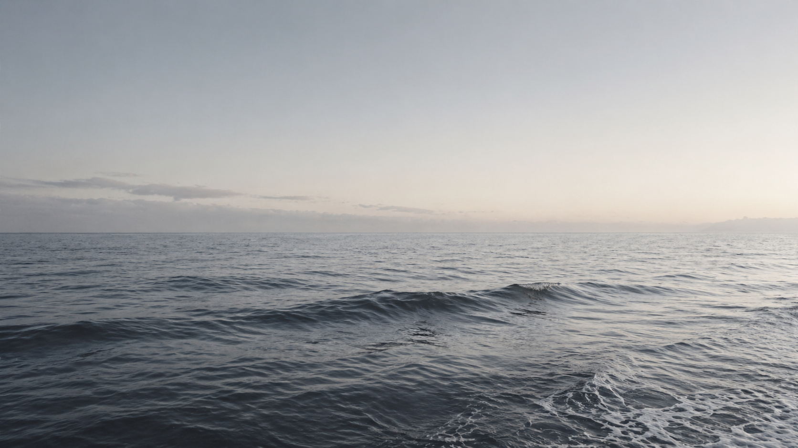

Deep Chill
Deep Chill
Deep Chill
Deep Chill
Why cold water?
What it actually does to your body — and why people who start tend to keep going.

Cold water triggers a rapid release of norepinephrine — one of the brain's main alerting chemicals — along with a spike in dopamine and adrenaline. The result is that specific feeling you get stepping out: clear, calm, and somehow energised all at once. Most people are surprised by how long it lasts. Hours, not the twenty minutes you'd get from a coffee.
Regular cold exposure also tends to lower baseline anxiety over time. Not dramatically — but noticeably. A quieter background noise.
Exercise breaks muscle fibres down — that's how adaptation works — but the resulting inflammation is what leaves you heavy and stiff the next day. Cold water constricts blood vessels and then drives a strong rebound as you warm up, flushing inflammatory markers out faster than your body would manage on its own.
A 2012 Cochrane review of 17 trials found cold-water immersion significantly reduced muscle soreness in the 24–96 hours after exercise. Athletes have known this for decades. The evidence just caught up.
Your core body temperature drops by around 1–2°C to properly initiate sleep. It happens naturally, but cold immersion in the afternoon or evening accelerates it — giving your nervous system a clear signal that the day is winding down. The result is typically falling asleep faster and spending more time in the deeper stages.
People who plunge in the evening often report waking up feeling like the sleep actually counted. Not more hours. Just better ones.
Cold exposure activates the prefrontal cortex — the part of your brain responsible for decision-making and sustained attention — while simultaneously lowering cortisol. You get the alert without the edge. That specific kind of calm focus is well documented in the research and almost universally reported by people who do this regularly.
The more interesting thing: baseline focus tends to improve over time, even outside of the plunge. The theory is that practising deliberate calm under discomfort makes that state more accessible generally.
A lot of people carry chronic low-level inflammation — stiff joints first thing, the heaviness, the sense that recovery takes longer than it used to. It tends to build so slowly you stop noticing it until it starts to lift.
A well-cited study from Radboud University found that regular cold exposure significantly reduced pro-inflammatory cytokines — the signalling molecules that drive this kind of systemic inflammation. The effect builds over weeks, not days, but it's measurable and people consistently report feeling it.
Cold activates brown adipose tissue — a type of metabolically active fat that burns energy to generate heat rather than storing it. Unlike regular fat, it's thermogenic. Regular cold exposure increases both how much of it you have and how active it is, which improves how your body manages energy overall.
A 2015 study in Nature Medicine found that short-term cold acclimation improved insulin sensitivity in type 2 diabetic patients — results comparable in scale to those from moderate exercise. Cold isn't a substitute for being active, but the metabolic effect is real and it compounds over time.
The one thing that makes it stick
"Every barrier you remove makes the habit almost inevitable. Having it outside your back door removes the last one."
We're not making this up
Everything on this page is drawn from peer-reviewed research — Radboud University, Nature Medicine, the British Journal of Sports Medicine, and others. We kept the citations out of the main copy because they interrupt the read, but they're all listed below if you want to go deeper.
A quick note: Cold water immersion isn't suitable for everyone. If you have a heart condition or any underlying health concerns, please check with your doctor before giving it a go. The information on this page is for general interest and doesn't constitute medical advice.
Get started
We handle the setup, the maintenance, and the temperature. You just show up. Check if we cover your area.
Check Availability